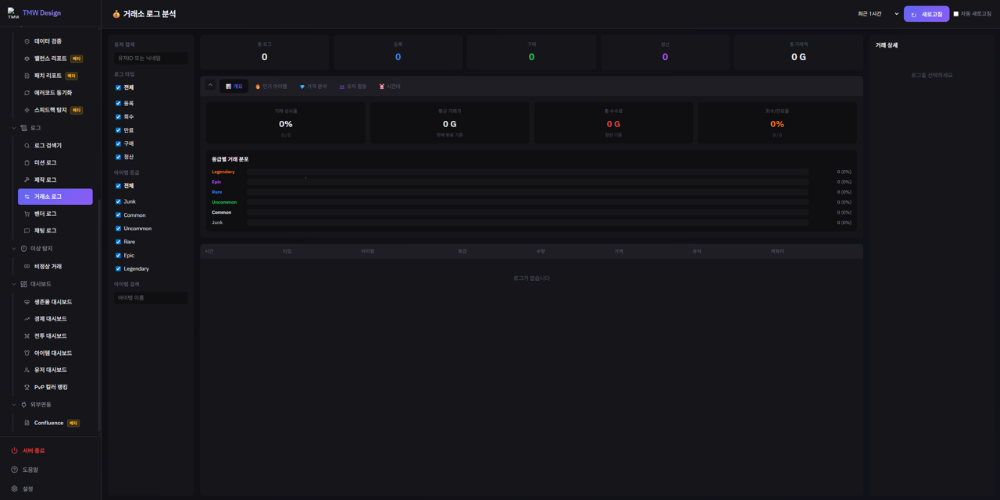

DEMO 03 · TradeLogViewer
거래소 원시 로그를 경제 분석 대시보드로 바꾸는 도구
기획자·매니저도 OpenSearch 없이 시각적으로 정리된 정보를 볼 수 있어야 했는데, OpenSearch 기본 제공 대시보드만으로는
원하는 방식의 시각화에 한계가 있어 직접 개발했습니다. 개발 중 거래 등록 로그만 보면 "최고가 매물"에
실제로 안 팔린 아이템이 섞여 나오는 문제를 발견해, TradeId로 등록·구매 로그를 매칭해 실제로 체결된
거래만 걸러내도록 수정했습니다. 아래 데모에서 우측 상단 "체결된 거래만 보기" 토글을 꺼보면 그
차이를 직접 확인할 수 있습니다.
로그 데이터는 실제 서비스 로그가 아닌 데모용으로 가상 재구성했습니다.
개요
인기아이템
가격분석
유저활동
시간대
로그를 클릭하면 상세 정보가 표시됩니다.
| 시간 | 유형 | 아이템 | 등급 | 수량 | 가격 | 거래ID | 구매자 |
|---|
🔍 "체결된 거래만 보기" 토글 안내 — 토글을 끄면 등록가 기준 최고가 TOP 5를 보여줍니다.
등록만 되고 실제로는 안 팔리거나 회수·만료된 매물도 순위에 섞여, 실제와 다른 순위가 나올 수 있습니다. 토글을 켜면
TradeId로 구매 로그와 매칭된, 실제로 체결된 거래만 집계합니다. 개발 중 실제로 겪었던
데이터 착시 문제를 그대로 재현한 것입니다.
📸 실사용 예시

사내에서 실제로 사용 중인 거래소 로그 분석 화면입니다. 로그 검색 결과는 비밀 유지를 위해 포함하지 않았습니다.